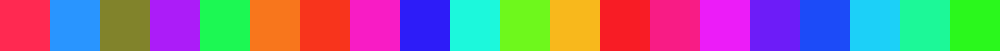
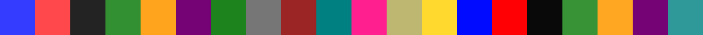
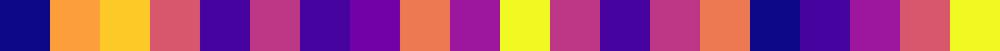
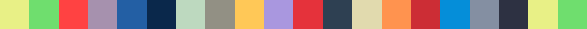
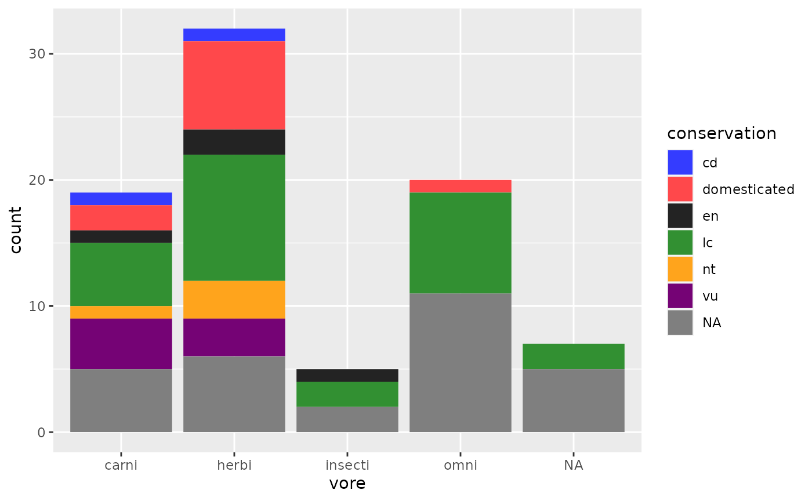
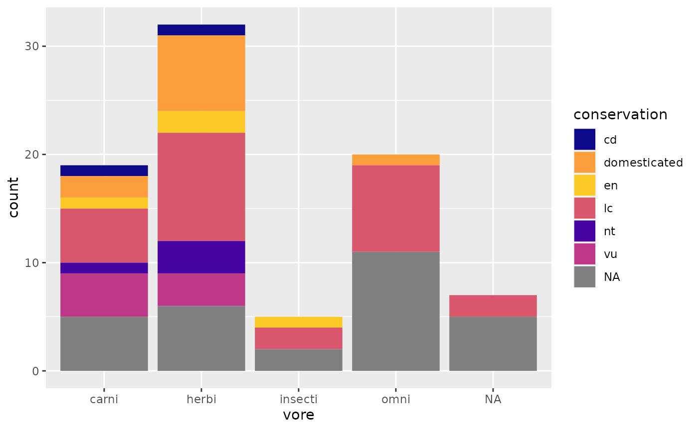

Introduction
nestcolor is a package containing standardized color
palettes used in various NEST package plots and graphical
teal modules to create a more continuous and cohesive
experience when viewing NEST visualizations.
Main Features
This package provides four different color palettes consisting of hex codes corresponding to a set number of colors. The nest palette contains 96 colors, the stream palette contains 38 colors, the viridis palette contains 49 colors, and the accessible palette contains 18 colors. Note that colors are repeated after the above numerical limits for each palette are reached.
The first 20 colors contained in each of the four color palettes are displayed below.
nest

stream

viridis

accessible

By running the following line of code to load in the
nestcolor package, the stream color palette
overrides the default ggplot2 color palette in subsequent
plots and graphical teal modules.
The color palette will be applied to any discrete graphical elements (not including continuous color scales or heat maps) that require no more than 20 different colors.
The default nestcolor color palette loaded is the
stream palette with 20 different colors. If another color
palette is preferred this can be changed through modifying the global
options by running the following snippet of code prior to any graphs,
specifying arguments n and palette for the color_palette
function:
pal <- color_palette(n, palette)
options(
ggplot2.discrete.colour = pal,
ggplot2.discrete.fill = pal)In addition to color palette functions, the nestcolor
package also contains a custom ggplot2 theme, theme_nest,
that can be set in NEST plots.
See package functions for more detail.
A Simple Example
A simple example implementing the nestcolor color
palette on a ggplot2 object could look like this:
library(ggplot2)
library(nestcolor)
g <- ggplot(msleep, aes(vore)) +
geom_bar(aes(fill = conservation))
g
If, for example, the viridis color palette was preferred with only 6 colors needed, the graph could be generated by the following code:
library(ggplot2)
library(nestcolor)
pal <- color_palette(n = 6, "viridis")
options(
ggplot2.discrete.colour = pal,
ggplot2.discrete.fill = pal
)
g <- ggplot(msleep, aes(vore)) +
geom_bar(aes(fill = conservation))
g
nestcolor does not depend on any other NEST
packages.